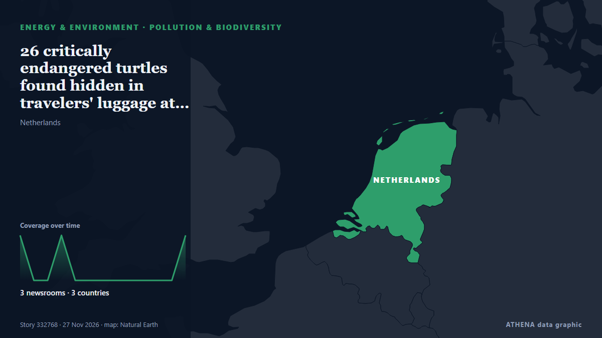

Pollution & biodiversity
SponsoredPresented by  Cybernetics and Artificial Intelligence Lab Welcome to the Cybernetics and Artificial Intelligence Laboratory, established at the Department of Business Administration of the National and Kapodistrian University of Athens. The lab is headed by Professor Dimitrios Thomakos. The lab aims to do research that can be published in top venues. Our research uses tools and methods of Artificial Intelligence, and lies in the following areas: - Forecasting - Decision making - Cyber security - Finance We are always looking forward to collaborating with exceptional students!
Cybernetics and Artificial Intelligence Lab Welcome to the Cybernetics and Artificial Intelligence Laboratory, established at the Department of Business Administration of the National and Kapodistrian University of Athens. The lab is headed by Professor Dimitrios Thomakos. The lab aims to do research that can be published in top venues. Our research uses tools and methods of Artificial Intelligence, and lies in the following areas: - Forecasting - Decision making - Cyber security - Finance We are always looking forward to collaborating with exceptional students!
| 14 Nov | 0 |
|---|---|
| 15 Nov | 0 |
| 16 Nov | 0 |
| 17 Nov | 0 |
| 18 Nov | 0 |
| 19 Nov | 0 |
| 20 Nov | 0 |
| 21 Nov | 0 |
| 22 Nov | 1 |
| 23 Nov | 2 |
| 24 Nov | 2 |
| 25 Nov | 5 |
| 26 Nov | 2 |
| 27 Nov | 2 |

26 critically endangered turtles found hidden in travelers' luggage at Schiphol
On Saturday, November 21, the Netherlands Food and Consumer Product Safety Authority (. from NL Times
Detonation of degraded lead azide in US's Iowa raises public concern
The Army went ahead with its planned detonation of volatile lead azide reserves Wednesday morning, according to the service. from Defense News
Saudi Red Sea Authority launches new marine wildlife guide
JEDDAH: The Saudi Red Sea Authority has launched the Kingdom’s first seasonal guide to viewing large marine animals, helping visitors to plan wildlife encounters while promoting responsible tourism. from Arab News
Dramatic fall in landfill waste across Northern Ireland
Just 4.5 percent of municipal waste went to landfill in 2025/26. from The Irish News (Belfast)
Vance shredded for trying to blame Obama for Iowa’s toxic lead after detonation backlash
The vice president made the remarks the same day the Army carried out a controlled blast to destroy the near 5 tone stockpile in Middleton, promoting local concerns about the potential health hazard. from The Independent
US army to detonate 68 barrels of toxic lead in Iowa on day before Thanksgiving
Residents warned to stay indoors amid conflicting information about how far the dust plume could travel The US Army is set to detonate 68 barrels – five tons – of lead azide at an ammunition plant in… from The Guardian
Dozens of oil-covered birds are showing up on a California coast. A 1953 shipwreck may be to blame
Rescued animals are being treated at a San Francisco Bay care center as officials urge beachgoers not to approach affected wildlife. from The Independent
Andrew and Tristan Tate’s ‘hands tied’ in UK extradition fight, say lawyers
Court filings in Miami claim the complainants only came forward after the brothers ‘became internationally famous internet personalities’. from Evening Standard (London)
Minamata disease exhibition to mark 70 years of recognition begins in Tokyo
An exhibition on Minamata disease, a mercury-poisoning ailment caused by environmental pollution, began Wednesday in Tokyo to raise p. from Mainichi (English)